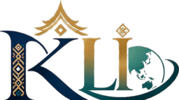

Keaslian dokumen
Verifikasi sertifikat KLI
Masukkan nomor sertifikat untuk memeriksa status, pemilik, program, dan tanggal penerbitan.

Hasil verifikasi akan ditampilkan di sini.
Keaslian dokumen
Masukkan nomor sertifikat untuk memeriksa status, pemilik, program, dan tanggal penerbitan.

Hasil verifikasi akan ditampilkan di sini.